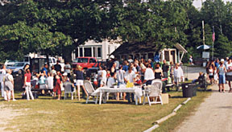
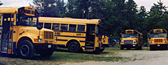

|
|
Jenkins Beach is a great place to hold your
group event. Be it a family reunion, school trip, church
group or club activity, let us know and we will be ready for you. Give us a call and we
can give you a quote!
|
A picnic is all part of the beach day tradition
and whether you choose to bring your own or enjoy our yummy
snack bar fare, you won't be disappointed.
We serve hamburgers, hot dogs, yummy French
fries, cold soda, ice cream and candy.
The snack bar opens up around ten or so and
stays open all afternoon providing refreshment and great
conversation with beach owner, Joe.
If you bring your own picnic, we have an area
where you can set up your charcoal grill for your BBQ. There are
plenty of picnic tables or if you choose, you can eat right on
the beach on your own beach blanket!
We love our pets but unfortunately, not everyone does. We must request you leave your pets at home. Thank you.
We accept only cash and checks.
|
 |
Jenkins Beach for your group events! |
|
 |
|